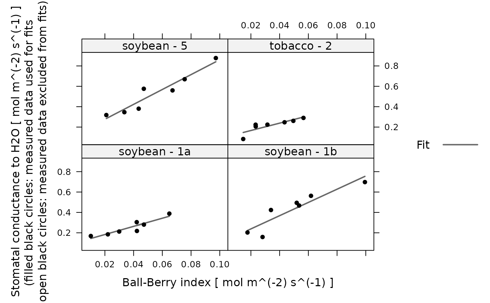

Fits the Ball-Berry model to an experimental curve
fit_ball_berry.RdCalculates a linear fit of stomatal conductance vs. the Ball-Berry index using
the data in the exdf object. This function can accomodate alternative
column names for the variables taken from the Licor file in case they change
at some point in the future. This function also checks the units of each
required column and will produce an error if any units are incorrect.
Arguments
- replicate_exdf
An
exdfobject representing one Ball-Berry curve.- gsw_column_name
The name of the column in
replicate_exdfthat contains the stomatal conductance to water vapor inmol m^(-2) s^(-1).- bb_index_column_name
The name of the column in
replicate_exdfthat contains the Ball-Berry index inmol m^(-2) s^(-1).
Details
The Ball-Berry model is a simple way to describe the response of a leaf's stomata to its assimilation rate and local environmental conditions. Specifically, it predicts stomatal conductance to water vapor using the following equation:
gsw = bb_0 + bb_1 * A * h_s / C_s
where gsw is the stomatal conductance, A is the net assimilation
rate, h_s is the relative humidity at the leaf surface, and C_s
is the CO2 concentration at the leaf surface. The term A * h_s / C_s is
commonly referred to as the Ball-Berry index, while the intercept
(bb_0) and slope (bb_1) of the linear relationship are the
Ball-Berry parameters which describe the stomatal response.
Although this model is certainly an oversimplification, it does encode some important stomatal responses. For example, when humidity is low, the stomata close, reducing stomatal conductance. Likewise, if the CO2 concentration around the leaf is depleted, the stomata open to allow more CO2 to diffuse into the leaf's interior, increasing somatal conductance. For more information about this model and some possible alternatives, see the following papers:
Ball, J. T., Woodrow, I. E. and Berry, J. A. "A Model Predicting Stomatal Conductance and its Contribution to the Control of Photosynthesis under Different Environmental Conditions." in "Progress in Photosynthesis Research: Volume 4" (1986) [doi:10.1007/978-94-017-0519-6_48 ].
Tardieu, F. and Davies, W. J. "Integration of hydraulic and chemical signalling in the control of stomatal conductance and water status of droughted plants." Plant, Cell & Environment 16, 341–349 (1993). [doi:10.1111/j.1365-3040.1993.tb00880.x ].
Leuning, R. "A critical appraisal of a combined stomatal-photosynthesis model for C3 plants." Plant, Cell & Environment 18, 339–355 (1995) [doi:10.1111/j.1365-3040.1995.tb00370.x ].
Dewar, R. C. "The Ball–Berry–Leuning and Tardieu–Davies stomatal models: synthesis and extension within a spatially aggregated picture of guard cell function." Plant, Cell & Environment 25, 1383–1398 (2002). [doi:10.1046/j.1365-3040.2002.00909.x ].
Ball-Berry parameters are typically determined by measuring a Ball-Berry curve, where one or more of the factors that influence the Ball-Berry index is systematically varied across a range of values. At each value, care is taken that net assimilation and stomatal conductance have reached their steady-state values, and then those values are recorded. Then, a linear fit of the experimentally observed stomatal conductances as a function of the Ball-Berry index is performed to extract estimates for the Ball-Berry intercept and slope.
This function assumes that replicate_exdf represents a single
Ball-Berry curve. To fit multiple curves at once, this function is often used
along with by.exdf and consolidate.
Value
A list with two elements:
fits: Anexdfobject including the measured values and the fitted values of stomatal conductance. The fitted values will be stored in a column whose name is determined by appending'_fits'to the end ofgsw_column_name; typically, this will be'gsw_fits'.parameters: Anexdfobject including the fitting parameters and R-squared values for each Ball-Berry curve. The Ball-Berry intercept is stored in thebb_interceptcolumn, the Ball-Berry slope is stored in thebb_slopecolumn, and the R-squared value for the fit is stored in ther_squaredcolumn.
Examples
# Read an example Licor file included in the PhotoGEA package, calculate
# additional gas properties, calculate the Ball-Berry index, define a new column
# that uniquely identifies each curve, and then perform a fit to extract the
# Ball-Berry parameters from each curve.
licor_file <- read_gasex_file(
system.file('extdata', 'ball_berry_1.xlsx', package = 'PhotoGEA', mustWork = TRUE)
)
licor_file <- calculate_total_pressure(licor_file)
licor_file <- calculate_gas_properties(licor_file)
licor_file[,'species_plot'] <-
paste(licor_file[,'species'], '-', licor_file[,'plot'])
licor_file <- calculate_ball_berry_index(licor_file)
# Fit just one curve from the data set (it is rare to do this)
one_result <- fit_ball_berry(
licor_file[licor_file[, 'species_plot'] == 'soybean - 1a', , TRUE]
)
# Fit all curves in the data set (it is more common to do this)
bb_results <- consolidate(by(
licor_file,
licor_file[, 'species_plot'],
fit_ball_berry
))
# View the fitting parameters for each species / plot
col_to_keep <- c('species', 'plot', 'species_plot', 'bb_intercept', 'bb_slope', 'r_squared')
bb_results$parameters[ , col_to_keep]
#> species plot species_plot bb_intercept bb_slope r_squared
#> 1 soybean 1a soybean - 1a 0.10331765 3.995129 0.8469371
#> 2 soybean 1b soybean - 1b 0.10835188 6.492116 0.8394901
#> 3 soybean 5 soybean - 5 0.13085656 7.300232 0.9094708
#> 4 tobacco 2 tobacco - 2 0.09410874 3.613489 0.7186892
# View the fits for each species / plot
lattice::xyplot(
gsw_fit + gsw ~ bb_index | species_plot,
data = bb_results$fit$main_data,
type = 'b',
pch = 16,
auto = TRUE,
grid = TRUE,
xlab = paste0('Ball-Berry index (', licor_file$units$bb_index, ')'),
ylab = paste0('Stomatal conductance (', licor_file$units$gsw, ')')
)
